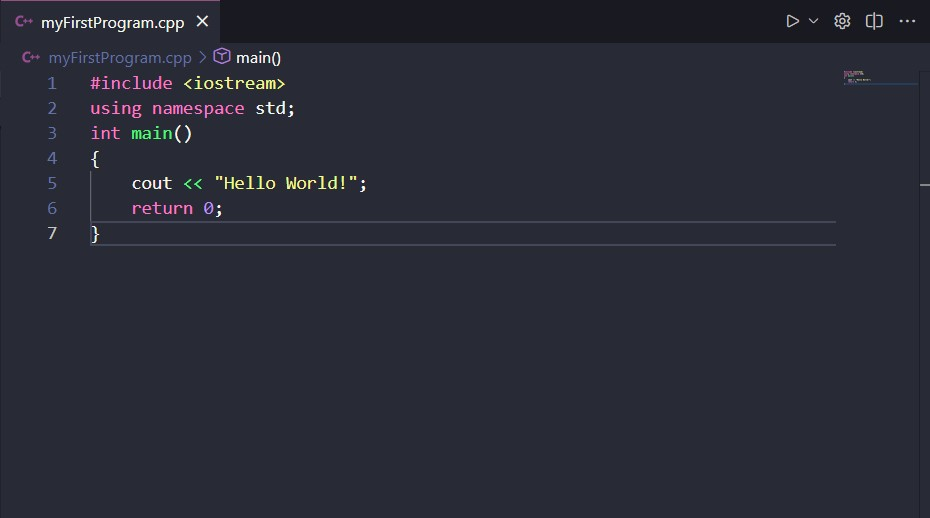
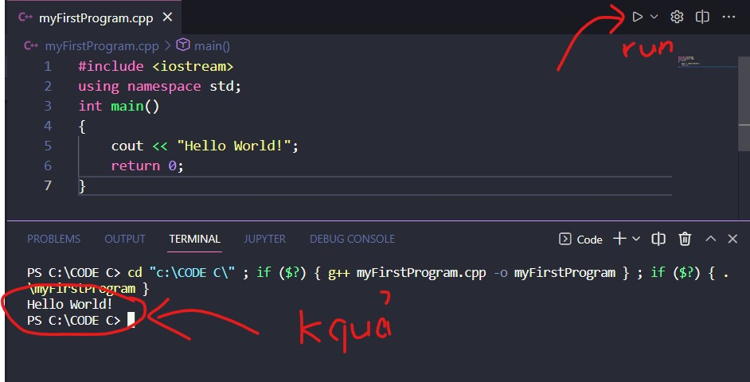

C++ là ngôn ngữ đa nền tảng có thể được sử dụng để tạo các ứng dụng hiệu suất cao.
C++ được phát triển bởi Bjarne Stroustrup, như một phần mở rộng của ngôn ngữ C.
C++ cung cấp cho người lập trình khả năng kiểm soát cao đối với tài nguyên hệ thống và bộ nhớ.
Ngôn ngữ này đã được cập nhật 4 lần chính vào năm 2011, 2014, 2017 và 2020 thành C++11, C++14, C++17, C++20.
C++ là một trong những ngôn ngữ lập trình phổ biến nhất thế giới.
C++ có thể được tìm thấy trong các hệ điều hành, Giao diện người dùng đồ họa và các hệ thống nhúng ngày nay.
C++ là ngôn ngữ lập trình hướng đối tượng mang lại cấu trúc rõ ràng cho các chương trình và cho phép sử dụng lại mã, giảm chi phí phát triển.
C ++ có thể mang theo được và có thể được sử dụng để phát triển các ứng dụng có thể thích ứng với nhiều nền tảng.
C++ rất thú vị và dễ học!
Vì C++ gần với C , C# và Java nên lập trình viên dễ dàng chuyển sang C++ hoặc ngược lại.
Để bắt đầu sử dụng C++, bạn cần hai thứ:
- Một trình soạn thảo văn bản, như Notepad, để viết mã C++
- Trình biên dịch, như GCC, để dịch mã C++ sang ngôn ngữ mà máy tính sẽ hiểu
Có nhiều trình soạn thảo văn bản và trình biên dịch để lựa chọn. Trong hướng dẫn này, chúng tôi sẽ sử dụng một IDE (xem bên dưới).
Một IDE (Môi trường phát triển tích hợp) được sử dụng để chỉnh sửa và biên dịch mã.
Các IDE phổ biến bao gồm Code::Blocks, Eclipse và Visual Studio. Tất cả đều miễn phí và chúng có thể được sử dụng để chỉnh sửa và gỡ lỗi mã C++.
=>>IDE mình hay xài đó là
Visual Studio Code. Vì nó có nhiều tiện ích hỗ trợ cho nhiều ngôn ngữ lập trình rất bổ ích mình khuyên ae nên test thử nha.
Hãy tạo tệp C++ đầu tiên cho mình nào.
Mở Visual Studio Code vài đi tới File > New File. Nhập tên file sau đó bấm Enter và lưu vào Folder cần lưu nha.
Để biên dịch mã C++, bạn cần một trình biên dịch.
Trong hướng dẫn này, chúng tôi sẽ sử dụng GCC.
Bắt đầu viết mã C++ nào. Mình sẽ tạo file myfirstprogram.cpp (Đuôi .cpp định dạng tệp C++ Nôm na là như vậy).
#include <iostream>
using namespace std;
int main() {
cout << "Hello World!";
return 0;
}
Nào đến phần chạy code thôi nào.

Để chạy được chương trình này thì Click vào cái hình tam giác ở trên góc phải hoặc tổ hợp phím Ctrl + Alt + N.
Kết quả nè:

Xin chúc mừng bro ! Bây giờ bạn đã viết và thực thi chương trình C++ đầu tiên của mình.
Dưới đây mình sẽ giải thích từng dòng code nhé.
Dòng 1:
#include <iostream> là thư viện tệp tiêu đề cho phép chúng ta làm việc với các đối tượng đầu vào và đầu ra, chẳng hạn như cout(được sử dụng trong dòng 5). Các tệp tiêu đề thêm chức năng cho các chương trình C++.
Dòng 2: using namespace std có nghĩa là chúng ta có thể sử dụng tên cho các đối tượng và biến từ thư viện chuẩn.
Dòng 3: Một thứ khác luôn xuất hiện trong chương trình C++, đó là int main(). Đây được gọi là một chức năng. Bất kỳ mã nào bên trong dấu ngoặc nhọn của nó {} sẽ được thực thi.
Dòng 5: cout (phát âm là "see-out") là một đối tượng được sử dụng cùng với toán tử chèn ( << ) để xuất/in văn bản. Trong ví dụ của chúng tôi, nó sẽ xuất ra "Xin chào thế giới".
Lưu ý: Mọi câu lệnh C++ đều kết thúc bằng dấu chấm phẩy ;.
Lưu ý: Phần thân của int main() cũng có thể được viết là:
int main () { cout
<< "Hello World! "; return 0; }
Hãy nhớ rằng: Trình biên dịch bỏ qua khoảng trắng. Tuy nhiên, nhiều dòng làm cho mã dễ đọc hơn.
Dòng 6: return 0 kết thúc hàm main.
Dòng 7: Đừng quên thêm dấu ngoặc nhọn đóng } để thực sự kết thúc chức năng chính.
Bạn có thể thấy một số chương trình C++ chạy mà không có thư viện namespace std . Dòng using namespace std này có thể được bỏ qua và thay thế bằng std từ khóa, theo sau là :: toán tử
đối với một số đối tượng:
#include <iostream>
int main() {
std::cout << "Hello World!";
return 0;
}
Kết quả vẫn là: Hello World! nhé
C++ Output (In ra ngoài màn hình)
Đối tượng Cout cùng với toán tử << được sử dụng để in giá trị văn bản
Example:
std::cout << "Values";
Bạn có thể thêm bao nhiêu
Cout tùy thích
Example:
#include <iostream>
int main() {
std::cout << "Hello World! 1";
std::cout << "Hello World! 2";
std::cout << "Hello World! 3";
return 0;
}
Để chèn thêm 1 dòng mới ta sử dụng ký tự \n
#include <iostream>
int main() {
std::cout << "Hello World! 1\n";
std::cout << "Hello World! 2\n";
std::cout << "Hello World! 3";
return 0;
}
Kết quả:
Hello World! 1
Hello World! 2
Hello World! 3
Cách khác: Thêm cái này vào cuối dòng endl
#include <iostream>
using namespace std;
int main() {
cout << "Hello World! 1" << endl;
cout << "Hello World! 2" << endl;
cout << "Hello World! 3";
return 0;
}
Kết quả:
Hello World! 1
Hello World! 2
Hello World! 3
Ký tự xuống dòng ( \n ) được gọi là một escape sequence và nó buộc con trỏ thay đổi vị trí của nó về đầu dòng tiếp theo trên màn hình. Điều này dẫn đến một dòng mới.
Ví dụ về các escape sequence
| Escape Sequence |
Description |
| \t |
Thêm khoảng trắng Tab |
| \\ |
Chèn ký tự (\) |
| \" |
Chén ký tự (") |